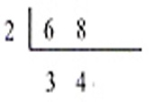
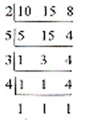
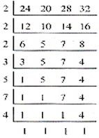

ENGAGE
Judy Ann cuts out rectangular pieces of paper and lays the out as shown in drawing. Each rectangular pieces of black paper is 6 cm long, while the white paper 8 cm long. What is the shortest length at which the pieces of paper will line up across both rows?
EXPLORE
We can solve the problem by finding the least common multiple of the numbers using continuous division. We have learned this method from the previous lesson and we will apply the same steps in solving for the LCM. However, instead of multiplying all the common divisors alone, we will include the quotient to the last step. We have
Since there is no more common divisor 3 and 4 we have 2 as the only common divisor. To solve for the LCM, we multiply the common divisor 2 by the quotient 3 and 4. Thus we have 2 x 3 x 4 = 24. Therefore, the shortest length at which the pieces of paper will the line up across two rows is 24 cm.
EXPLAIN
A multiple of a number is the product of the number and any counting number. And just the like common factor, two or more numbers have also common multiples. The LCM then is the least common multiple of two or more numbers. For example, the LCM of relatively prime numbers are their product.
To find the LCM of the given numbers, we can use the method, and continuous division. Of the two method mentioned continuous division is more efficient: and helpful if three or more numbers are involved. Let us study the following examples.
Find the LCM of 10, 15, and 8
Solution:
By listing multiples
a.) Multiples of 10, 10, 20, 30, 40, 50, 50, 70, 80, 90, 100, 110, 120
b.) Multiples of 15: 15, 30, 45, 60, 75, 90, 205, 120
c.) Multiples of 8: 8, 16, 24, 32, 40, 48, 56, 64, 72, 80, 88, 96, 104, 112, 120

The LCM of 10, 15, and 8 is 20.
Example 2 What is the LCM of 24, 20, 28, and 32?
2 x 2 x 2 x 3 x 5 x 7 x 4 = 3360
Answer: The LCM of 24, 20, 28, and 32 is 3360
Application and Problem Solving
Plane A flies to Davao every 4 days. Plane B flies to Davao every 8 days. If both planes are in Davao on July 17, what is the earliest date that both planes will be in Davao again?